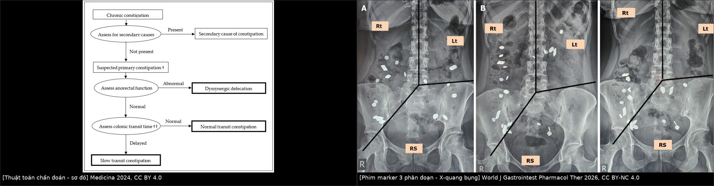
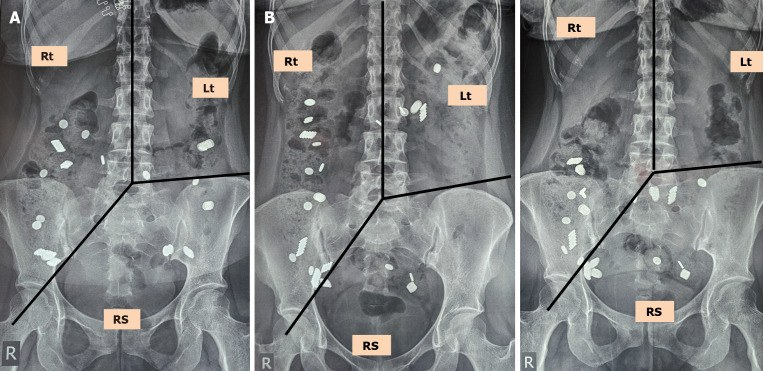
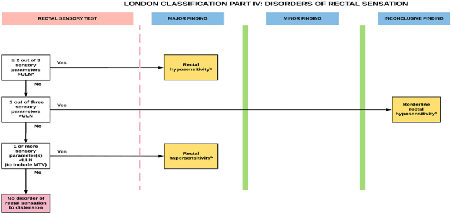
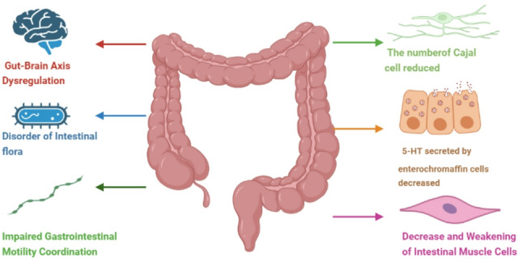

555 — Táo bón chậm vận chuyển & loạn cảm trực tràng: đọc phim marker và phân loại London
Tags: pattern:cham-van-chuyen vung:dai-trang vung:truc-trang-hau-mon score:London protocol:colonic-transit protocol:manometry
Mức chắc chắn (certainty): tổng hợp y văn (literature synthesis) — nhóm tự biên từ các bài tổng quan mở (Medicina 2024, World J Gastrointest Pharmacol Ther 2026, BMC Gastroenterol 2026, Gastro Hep Adv 2025); số liệu lấy trực tiếp từ bảng/Fig của bài gốc, chưa gắn một bệnh án riêng của nhóm.
1. Tổng quan — “đồng hồ đại tràng” chạy chậm: cơ chế và ngưỡng
- Táo bón chậm vận chuyển (slow transit constipation, STC): phân đi qua đại tràng chậm hơn bình thường sau khi đã loại trừ tắc nghẽn đường ra (loạn vận động tống phân) và nguyên nhân thứ phát. Đây là rối loạn vận động, không phải “phân cứng” đơn thuần — điều trị bằng thuốc tăng nhu động/chế tiết, chỉ mổ khi thật chọn lọc.
- TẠI SAO đại tràng đẩy được phân: (1) tế bào kẽ Cajal (interstitial cells of Cajal, ICC) tạo nhịp điện chậm; (2) serotonin (5-HT) từ tế bào ưa crôm (enterochromaffin) kích hoạt phản xạ tại chỗ; (3) các co bóp lan truyền biên độ cao (high-amplitude propagating contractions, HAPC) đẩy khối phân về trực tràng, tăng mạnh sau ăn (phản xạ dạ–đại tràng) và khi thức dậy. Trong STC, số lượng/chức năng ICC giảm, 5-HT giảm, HAPC thưa và yếu → thời gian lưu phân kéo dài, phân mất nước, trực tràng “nhận hàng” thưa thớt. Một phần bệnh nhân có chậm nhu động ngoài đại tràng: chậm rỗng dạ dày 34%, chậm vận chuyển ruột non 10%, cả hai 8% (Medicina 2024).
- TẠI SAO đếm được vận chuyển bằng phim X-quang: hạt marker cản quang (radiopaque marker) là hạt nhựa trơ, không hấp thu, không tan, tỷ trọng cao hơn mô mềm/khí nên hiện đậm hơn bóng ruột trên phim bụng. Số hạt còn lại tại một thời điểm cố định = tích phân vận chuyển từ lúc nuốt đến lúc chụp; vị trí hạt (khung đại tràng phải / trái / trực tràng–sigma) cho biết đoạn nào chậm. Đây là phép đo gián tiếp: không đo áp lực, không đo tốc độ tức thời.
- Ngưỡng định lượng cốt lõi (ghi rõ phiên bản/nguồn):
- Kỹ thuật 1 viên – 1 phim (phổ biến): nuốt 20 marker, chụp bụng ngày thứ 5; còn ≥ 5 hạt (≥ 20%) = chậm vận chuyển. Vì một số viên chứa số hạt khác nhau, quy tắc chung là ≥ 20% số hạt ban đầu (Medicina 2024).
- Kỹ thuật Metcalf (3 viên – 1 phim): 20 marker ở 0, 24, 48 giờ, phim 72 giờ; cho thời gian từng đoạn: đại tràng phải 11,3 ± 1,1 giờ, trái 11,4 ± 1,4 giờ, trực tràng–sigma 12,4 ± 1,1 giờ (bảng tổng hợp của World J Gastrointest Pharmacol Ther 2026).
- Biến thể châu Á (Ghoshal): 20 marker ở 0, 12, 24 giờ, phim 36 và 60 giờ; ≥ 30 hạt ở 36 giờ và ≥ 14 hạt ở 60 giờ có độ nhạy/độ đặc hiệu cao cho STC hoặc loạn vận động tống phân — vì người châu Á vận chuyển nhanh hơn, protocol phương Tây dễ “âm tính giả”.
- Xạ hình đại tràng (scintigraphy): đo % hoạt độ còn lại theo đoạn tại 24 và 48 giờ; ngưỡng bất thường = trung bình + 2 SD của người khỏe mạnh.
- Viên nang không dây (wireless motility capsule): cho tổng thời gian vận chuyển, không cho thông tin từng đoạn đại tràng.
- Loạn cảm trực tràng (rectal hyposensitivity): ngưỡng cảm giác với bóng hơi tăng — bệnh nhân không cảm thấy phân đến trực tràng nên không rặn. Đo bằng test cảm giác trực tràng (rectal sensory test) trong lúc manometry: bơm từng 10 mL đến khi bệnh nhân cảm nhận lần đầu, sau đó từng 20 mL đến thể tích dung nạp tối đa (maximum tolerated volume, MTV), tối đa 400 mL; ghi 3 tham số: cảm giác đầu tiên, cảm giác muốn đi ngoài, MTV. Theo phân loại London (London Classification): ≥ 2/3 tham số > giới hạn trên bình thường = loạn cảm (hyposensitivity); 1/3 = thể ranh giới (borderline); ≥ 2/3 thấp hơn = tăng cảm (hypersensitivity).
- Vì sao phải đo cả hai: STC và loạn cảm trực tràng có thể cùng tồn tại; nếu chỉ nhìn phim marker sẽ bỏ sót phần “ngõ ra”, và ngược lại. Marker không tương quan với mức độ nặng/chất lượng sống — đừng dùng số hạt để quyết định mổ.
2. Mẫu hình + chẩn đoán phân biệt theo vị trí (Gamut)
- Theo phân đoạn trên phim marker:
- Chậm toàn bộ (pan-colonic): hạt rải khắp khung đại tràng, tồn tại nhiều ngày → colonic inertia (đại tràng “lười”), thường kèm chậm rỗng dạ dày.
- Chậm đại tràng phải: ứ ở manh tràng/lên; gợi ý vận chuyển đoạn gần, đôi khi do đại tràng dài/rườm (redundant colon).
- Chậm đại tràng trái: ứ ở đại tràng xuống — hay gặp trong STC thể hỗn hợp.
- Chậm trực tràng–sigma (rectosigmoid): hạt dồn ở khung chậu → nghĩ tắc nghẽn đường ra (loạn vận động tống phân, sa tạng, rectocele) trước khi gọi là STC.
- Theo cơ chế (gamut thực hành):
- Rối loạn chức năng: STC, táo bón vận chuyển bình thường (normal transit constipation, NTC), loạn vận động tống phân (dyssynergic defecation, DD), loạn cảm trực tràng, hội chứng ruột kích thích thể táo bón (IBS-C).
- Thứ phát: thuốc (opioid, kháng cholinergic, chẹn kênh canxi, sắt, thuốc chống loạn thần), suy giáp, tăng canxi máu, đái tháo đường (bệnh thần kinh nội tạng), xơ cứng bì, tổn thương tủy, bệnh Hirschsprung ở người lớn (hiếm), giả tắc ruột mạn (CIPO), đại tràng giãn/megacolon.
- Tại chỗ: hẹp do ung thư, viêm túi thừa, sa trực tràng, rectocele, nứt hậu môn đau (nhịn đi ngoài).
- Gợi nhớ “SLOW”: Secondary (thuốc/nội tiết/thần kinh) — Lazy colon (colonic inertia) — Outlet (DD/sa/rectocele) — Weak sensation (loạn cảm trực tràng).
3. Bảng so sánh phân biệt (ma trận đối chiếu)

Trái: thuật toán chẩn đoán (Medicina 2024, CC BY 4.0). Phải: phim marker chia 3 đoạn bằng 3 đường kẻ (World J Gastrointest Pharmacol Ther 2026, CC BY-NC 4.0). Ảnh ghép letterbox, không crop/kéo giãn.| Thực thể (entity) | Hình ảnh / phép đo điển hình | Chốt vào (rule-in) | Chốt loại (rule-out) | Gợi ý xác nhận |
|---|---|---|---|---|
| STC (colonic inertia) | ≥ 5/20 marker còn ở ngày 5 hoặc chậm toàn bộ theo Metcalf; đại tràng không giãn | Chậm vận chuyển khách quan + anorectal function bình thường | Anorectal manometry/bóng tống phân bất thường → DD là chính | Phim marker (+ xạ hình nếu cần) |
| Táo bón vận chuyển bình thường (NTC) | Marker thải hết đúng hạn; phân cứng, thưa | Vận chuyển bình thường + tiêu chuẩn Rome IV | Marker còn ≥ 20% → không phải NTC | Phim marker; đáp ứng chất xơ/làm mềm phân |
| Loạn vận động tống phân (DD) | Marker dồn ở trực tràng–sigma; manometry: áp lực đẩy thấp + cơ thắt không giãn; bóng không tống được | Rặn không giãn cơ thắt + bóng tống phân thất bại | Vận chuyển chậm đơn thuần, không có bất thường tống phân | HR-ARM + balloon expulsion (xem bài 546) |
| Loạn cảm trực tràng | ≥ 2/3 tham số cảm giác > giới hạn trên (London); marker có thể bình thường | Ngưỡng cảm giác tăng, không đau, không tắc nghẽn | Có tắc nghẽn cơ học/DD → loại cảm đơn thuần | Rectal sensory test; huấn luyện cảm giác |
| Giả tắc ruột mạn (CIPO) | Đại tràng/ruột non giãn, mức khí–dịch; vận chuyển rất chậm, có đoạn đứng hoàn toàn | Giãn + chậm nặng nhiều tầng + triệu chứng tắc tái diễn | Chỉ chậm đại tràng, không giãn → STC | Manometry ruột non, CT |
| Hirschsprung người lớn / megacolon | Đại tràng giãn rộng, vùng chuyển tiếp hẹp; marker ứ trước đoạn hẹp | Vùng chuyển tiếp + giãn trước hẹp | Đại tràng hiệu suất bình thường, không chuyển tiếp | CT đại tràng, sinh thiết trực tràng |
4. Protocol + phân độ và ngưỡng xử trí
4.1 Chuẩn bị và kỹ thuật
- Trước chụp: ngừng thuốc làm thay đổi vận chuyển nếu an toàn (opioid, kháng cholinergic, chẹn canxi) theo chỉ định lâm sàng; không dùng thuốc nhuận tràng trong thời gian đo; giữ chế độ ăn/thói quen bình thường.
- Kỹ thuật 1 viên – 1 phim: nuốt 20 marker, chụp X-quang bụng tư thế nằm ngửa (supine) vào ngày 5 (một số trung tâm chụp ngày 4 và 7). Bắt buộc phim nằm ngửa — xem cạm bẫy mục 5.
- Kẻ 3 đường trên phim (theo Fig. 2A của bài gốc): (1) đường dọc qua giữa thân đốt L5; (2) đường từ L5 đến lỗ chậu phải; (3) đường từ L5 đến gai chậu trước trên bên trái. Ba vùng = đại tràng phải – đại tràng trái – trực tràng/sigma (RS).
- Đếm và ghi: tổng số hạt còn lại + số hạt từng vùng + thời điểm chụp. So với ngưỡng ≥ 5/20 (≥ 20%) hoặc protocol địa phương (Metcalf/Ghoshal) — ghi rõ protocol đã dùng vì ngưỡng khác nhau.
- Trước khi đo vận chuyển: làm HR-ARM + balloon expulsion test để loại DD (bài 546). Nếu không có điều kiện làm anorectal function, có thể đo vận chuyển trước nhưng phải diễn giải thận trọng (thuật toán Fig. 1).
- Khi nghi loạn cảm: rectal sensory test trong lúc ARM, bơm 10 mL/lần đến cảm giác đầu tiên rồi 20 mL/lần đến MTV (tối đa 400 mL).
4.2 Phân loại và ngưỡng điều trị
- NTC: chất xơ, nước, làm mềm phân, thuốc kích thích ngắn hạn; không mổ.
- DD: biofeedback + vật lý trị liệu sàn chậu là điều trị đầu tay; thuốc tăng nhu động ít hiệu quả nếu chưa sửa động tác rặn.
- STC: prucalopride 1–2 mg/ngày (tối đa 4 mg); linaclotide 72–145 µg/ngày (tối đa 290 µg); plecanatide 3 mg/ngày; lubiprostone 24 µg × 2/ngày; elobixibat 5–15 mg/ngày. Bằng chứng đặc hiệu cho STC còn mỏng, phần lớn ngoại suy từ táo bón mạn.
- Loạn cảm trực tràng: huấn luyện cảm giác bằng bóng hơi (bơm thể tích nhỏ dần để bệnh nhân cảm nhận sớm hơn) + biofeedback; phối hợp với điều trị STC nếu có.
- Mổ (subtotal colectomy ± ileorectal anastomosis): chỉ khi STC đã chứng minh, thất bại nội khoa, anorectal function bình thường. Kết quả Knowles 2017: hài lòng 86% nhưng biến chứng 24%, tử vong 0,4%, mổ lại 13%, tắc ruột non 15%; về dài hạn đau bụng 30–50%, chướng 10–40%, tái phát táo bón 10–30%, tiêu chảy 5–15%. Nếu DD + STC cùng tồn tại: điều trị DD trước, và nếu vẫn phải mổ thì ileostomy được ưu tiên hơn ileorectal anastomosis.
flowchart TD
A[Táo bón mạn ≥ 3 tháng] --> B{Cờ đỏ hoặc nguyên nhân thứ phát?}
B -->|Có| C[Điều trị nguyên nhân: thuốc, tuyến giáp, canxi, đại tràng giãn]
B -->|Không| D[HR-ARM + balloon expulsion test]
D -->|Bất thường| E[Loạn vận động tống phân: biofeedback]
D -->|Bình thường| F[Đo thời gian vận chuyển đại tràng]
F -->|Bình thường| G[Táo bón vận chuyển bình thường]
F -->|Chậm toàn bộ| H[STC thể colonic inertia]
F -->|Chậm trực tràng-sigma| I[Nghi tắc nghẽn đường ra: đánh giá lại]
E --> J[Vẫn chậm sau biofeedback: đo lại vận chuyển]
H --> K[Thuốc tăng nhu động hoặc tăng tiết]
K --> L[Thất bại và đủ tiêu chuẩn: xét mổ]
5. Biến thể bình thường và cạm bẫy
- Tư thế phim — cạm bẫy số 1: trên phim đứng (erect), đại tràng ngang sa theo trọng lực xuống khung chậu, hạt bị đọc nhầm là ứ ở trực tràng–sigma → chẩn đoán sai thành tắc nghẽn đường ra. Phim nằm ngửa cho thấy nhiều hạt thực ra thuộc đại tràng ngang/trái. Bài gốc mô tả đúng một ca như vậy: phim đứng gợi ý ứ RS, phim ngửa xác nhận STC. Vì thế: luôn chụp nằm ngửa và đối chiếu giải phẫu.
- Đại tràng dài/rườm (dolichocolon, redundant colon): bóng ruột gấp khúc trông như tắc; hạt có thể “đứng” ở quai rườm mà vận chuyển vẫn bình thường. Đừng chẩn đoán tắc chỉ vì hình dạng.
- Manh tràng sa vào khung chậu: hạt ở manh tràng sa thấp bị đếm nhầm vào RS — phải lần theo khung đại tràng, không chỉ nhìn vị trí trên mặt phẳng.
- Số hạt không = mức nặng: không tương quan với triệu chứng/chất lượng sống; đừng dùng để quyết định mổ.
- Đo vận chuyển trước khi loại DD: hạt ứ ở RS có thể do DD chứ không phải STC; nếu bỏ qua, bệnh nhân bị mổ đại tràng oan. Ngược lại, DD + STC cùng tồn tại khá thường gặp.
- Loạn cảm trực tràng bị bỏ sót: bệnh nhân “không buồn đi” với marker bình thường; nếu chỉ đo vận chuyển sẽ kết luận “không bệnh”. Cần rectal sensory test.
- Thuốc và bệnh nền: opioid, kháng cholinergic, chẹn canxi, sắt; suy giáp; tăng canxi; đái tháo đường; xơ cứng bì — luôn rà trước khi gọi “vô căn”.
- Thai kỳ/trẻ em: ngưỡng và protocol khác; bài này dành cho người lớn không mang thai.
6. Tự lượng giá — Blind Quiz
Ca 1 — Nữ 34 tuổi, táo bón 6 năm, rặn nhiều, không đau hậu môn. Phim marker ngày 5: hai tư thế.

- Câu hỏi: Ở phim đứng, hạt dồn ở vùng nào và dễ gợi ý chẩn đoán gì? Phim nằm ngửa thay đổi cách đọc ra sao? Kết luận hợp lý nhất?
Bấm để hiện đáp án
- Trên phim đứng, đại tràng ngang sa xuống khung chậu làm hạt trông như ứ ở trực tràng–sigma → dễ chẩn đoán nhầm tắc nghẽn đường ra.
- Phim nằm ngửa cho thấy nhiều hạt đó thực chất thuộc đại tràng ngang/trái, không phải RS.
- Kết luận: chậm vận chuyển đại tràng (STC), không phải tắc nghẽn đường ra — đúng như mô tả trong bài gốc.
- Nguồn ảnh: Kalra S và cs., World J Gastrointest Pharmacol Ther 2026, PMC12968637 Fig. 2, CC BY-NC 4.0.
Ca 2 — Nữ 41 tuổi, đi ngoài 1 lần/3 ngày, “không có cảm giác muốn đi”. Manometry cảm giác: cảm giác đầu tiên và cảm giác muốn đi ngoài đều trên giới hạn trên, MTV bình thường.

- Câu hỏi: Với 2/3 tham số cảm giác tăng ngưỡng, phân loại là gì? Hướng điều trị nào khác với STC thuần?
Bấm để hiện đáp án
- Loạn cảm trực tràng (rectal hyposensitivity) — vì ≥ 2/3 tham số > giới hạn trên bình thường; nếu chỉ 1/3 thì gọi thể ranh giới.
- Điều trị: huấn luyện cảm giác bằng bóng hơi (giảm dần thể tích để bệnh nhân cảm nhận sớm) + biofeedback; không chỉ dùng thuốc tăng nhu động.
- Nguồn ảnh: Belilos EA và cs., Gastro Hep Adv 2025, PMC11761937 Fig. 5, CC BY-NC-ND 4.0 (giữ nguyên bản, không chỉnh sửa).
Ca 3 — Nam 52 tuổi, táo bón 8 năm, đã dùng 3 loại thuốc không đỡ. Phim marker: hạt rải khắp đại tràng, còn 14/20 hạt ngày 5; HR-ARM và bóng tống phân bình thường.

- Câu hỏi: Phân loại thể bệnh? Vì sao không mổ ngay? Hai nhóm thuốc nên cân nhắc và ngưỡng liều?
Bấm để hiện đáp án
- STC thể chậm toàn bộ (colonic inertia): còn 14/20 (70%) hạt — vượt ngưỡng ≥ 20%; anorectal function bình thường nên loại DD.
- Chưa mổ vì cần thất bại nội khoa đầy đủ và chọn bệnh nhân chặt; biến chứng mổ 24%, tái phát táo bón 10–30%.
- Thuốc: prucalopride 1–2 mg/ngày (tối đa 4 mg) hoặc linaclotide 72–145 µg/ngày (tối đa 290 µg); có thể phối hợp huấn luyện cảm giác/nhu động.
- Nguồn ảnh: Yang F & Tao Q, BMC Gastroenterol 2026, PMC13312729 Fig. 1, CC BY-NC-ND 4.0 (giữ nguyên bản).
Bài liên quan chéo
- 546 — Loạn vận động tống phân (anismus / dyssynergic defecation) — bước bắt buộc trước khi gọi STC.
- 545 — MR động học sàn chậu — đánh giá sa tạng/rectocele khi nghi tắc nghẽn đường ra.
- 547 — Sa tạng chậu nữ: POP-Q & lưới nâng
- 556 — Đau sàn chậu cơ–mạc & đau thần kinh thẹn
Ảnh
images/555_co-che_STC_Flow_PMC13312729-Fig1.jpg— sơ đồ cơ chế, CC BY-NC-ND 4.0 (giữ nguyên).images/555_van-chuyen-marker_DR_PMC12968637-Fig2.jpg— phim marker 3 phân đoạn, CC BY-NC 4.0.images/555_so-do-chan-doan_Flow_PMC10819559-Fig1.jpg— thuật toán chẩn đoán, CC BY 4.0.images/555_loan-cam-truc-trang_Flow_PMC11761937-Fig5.jpg— phân loại London phần IV, CC BY-NC-ND 4.0 (giữ nguyên).images/composite_555_chan-doan-va-hinh-anh.jpg— ảnh ghép letterbox (CC BY 4.0 + CC BY-NC 4.0).- Chi tiết nguồn/giấy phép từng file:
images/CREDITS.md; link gốc:sources.md.
Không dùng để chẩn đoán độc lập khi chưa có người hướng dẫn.